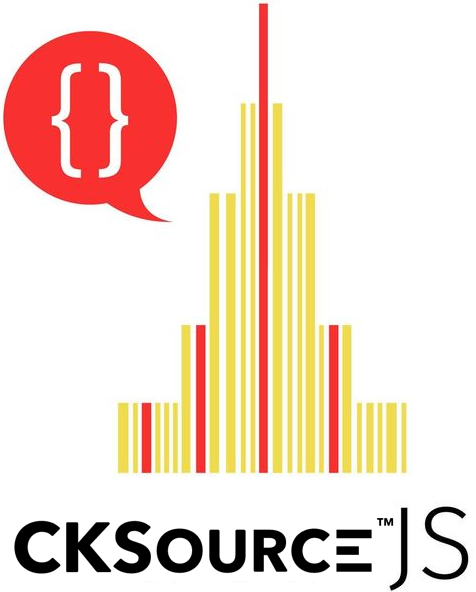
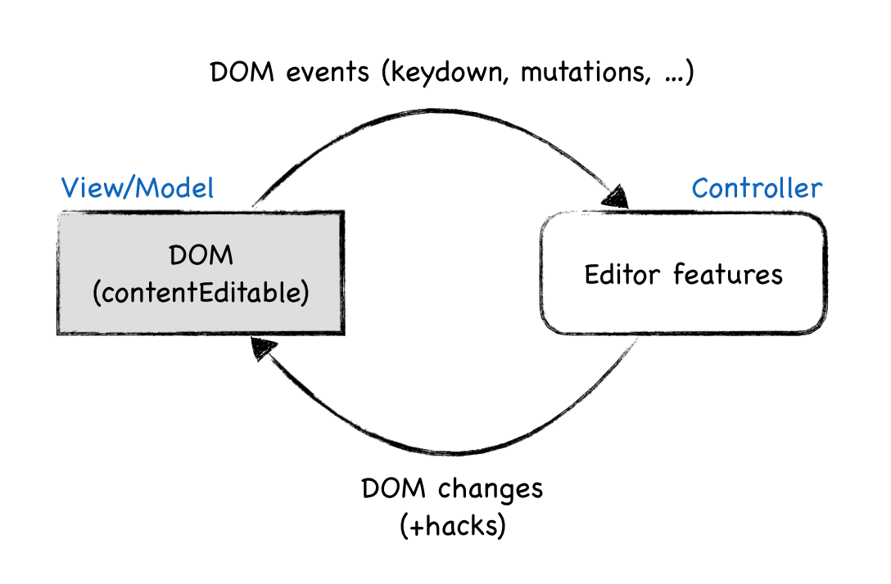
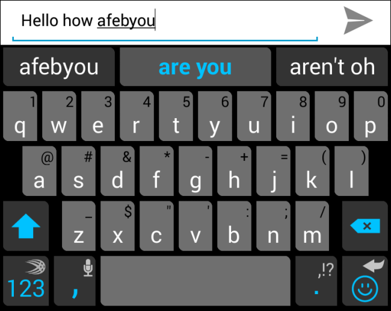
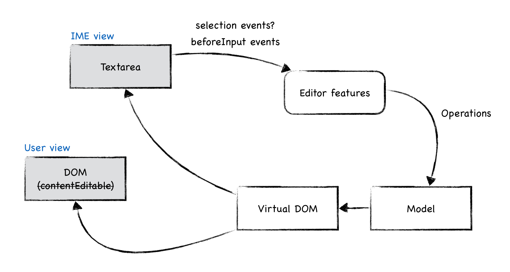

Piotrek Koszuliński
“Za szeroko zamkniętymi drzwiami – contentEditable” [PL]
2017-11-08
Text editing
- It's everywhere
- Starts with plain-text
- @mentions
- Rich-text
Markdown
Nope, nope, nope
Markdown alternative?
WhatYouSeeIsWhatYouGget
RichTextEditor
WhatYouSeeIsWhatYouMean
ContentEditable
contentEditable="true"- Introduced in IE 5.5 (2000)
“Wow, contentEditable is AWESOME!
Let's create a WYSIWYG editor (maybe)!”
Broken promise
- Inconsistent implementations
- Bugs
- Missing specification
- Missing or poor APIs
- Hacks required
But why?
- First implementation
- Reverse-engineered implementations
- Singleton
It can't be that bad?
- Selection API
- Common past – plain contentEditable
- Feedback
- Release all the hacks!
- Years pass...
Architecture

New era
- Let's start from scratch
- Custom data model
Custom == better
<p><b>Foo</b><i>Bar</i></p>
<paragraph>
"Foo" (bold=true)
"Bar" (italic=true)
</paragraph>
Custom data model
- Simplifies features implementation
- Separates the view
- Hides hacks
- Advanced features (e.g. real-time collab editing)
Success?
- Hack are still there
- Problem: input and rendering
- Example: typing
Do we need contentEditable?
Text editing
- IME – Input Method Engine
- onscreen keyboard
- spellchecking, autocorrect, suggestions
- cut & paste
- accessibility
- selection (LTR-RTL, x-pos, touch devices, text rects, word and line selections...)
More: “ContentEditable — The Good, The Bad and The Ugly”
W3C to the rescue
- contentEditable=minimal
- beforeInput event
IME all the things

Drop contentEditable?

Google Docs
To co z tymi drzwiami?